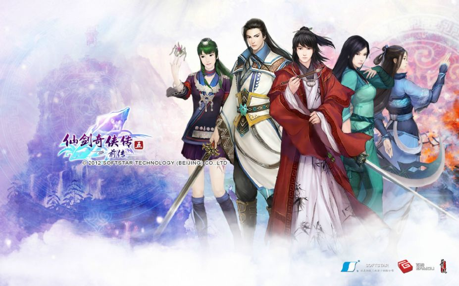

|
|
|
《仙剑奇侠传五前传》是由大宇资讯旗下软星科技（北京）有限公司所制作的一款国产单机中文角色扮演电脑游戏。本作是《仙剑奇侠传》系列第七部作品，主题为“牵绊”，剧情发生年代为《仙剑奇侠传五》故事背景二十多年前。游戏已于2013年1月15日上市，剧情配音同步开放下载。
悠游尘世的人，背负宿命的人，落拓江湖的人……
身份迥异的数人，为了心中的牵绊，相逢于人海。踏西域黄沙，渡东海惊涛，共经多少风雨，磨砺的是少年意气，不变的是知己情谊。奈何世事无常，天意总是弄人。牵绊犹在，信念却已相悖，名利无求，挥剑只为同生。相逢若陌路，拂却恩怨风烟，已不见当年身影。
然而，即便行至命运的终点，剑刃相向之时，回望烽云，此生无悔，此心无愧
请支持正版
http://pal5q.baiyou100.com/2501000.asp